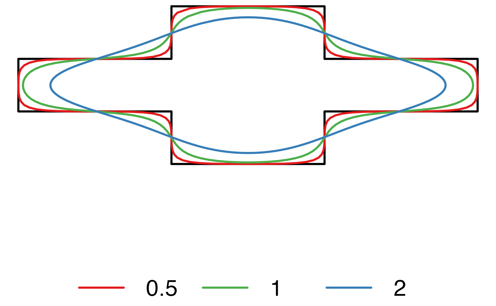
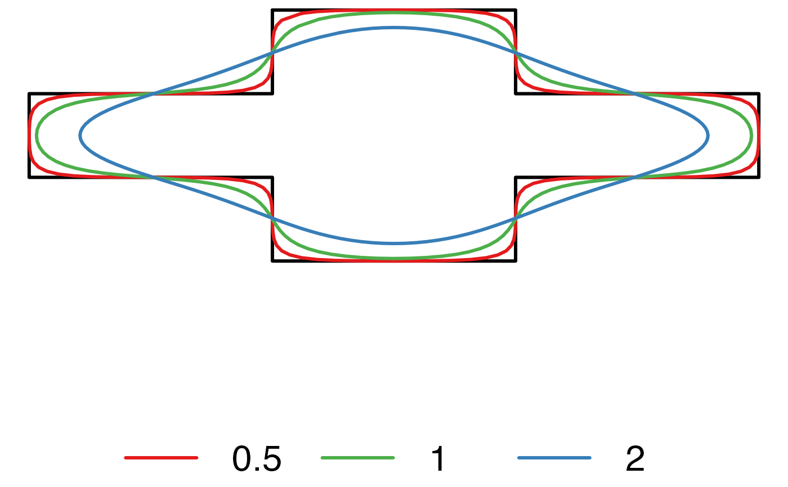

Kernel smoothing uses stats::ksmooth() to smooth out existing vertices
using Gaussian kernel regression. Kernel smoothing is applied to the x and
y coordinates are independently. Prior to smoothing, smooth_densify() is
called to generate additional vertices, and the smoothing is applied to this
densified set of vertices.
smooth_ksmooth(
x,
wrap = FALSE,
smoothness = 1,
bandwidth,
n = 10L,
max_distance
)Arguments
- x
numeric matrix; 2-column matrix of coordinates.
- wrap
logical; whether the coordinates should be wrapped at the ends, as for polygons and closed lines, to ensure a smooth edge.
- smoothness
numeric; a parameter controlling the bandwidth of the Gaussian kernel, and therefore the smoothness and level of generalization. By default, the bandwidth is chosen as the mean distance between adjacent points. The
smoothnessparameter is a multiplier of this chosen bandwidth, with values greater than 1 yielding more highly smoothed and generalized features and values less than 1 yielding less smoothed and generalized features.- bandwidth
numeric; the bandwidth of the Guassian kernel. If this argument is supplied, then
smoothnessis ignored and an optimal bandwidth is not estimated.- n
integer; number of times to split each line segment for
smooth_densify(). Ignored ifmax_distanceis specified.- max_distance
numeric; the maximum distance between vertices for
smooth_densify(). This is the Euclidean distance and not the great circle distance.
Value
A matrix with the coordinates of the smoothed curve.
Details
Kernel smoothing both smooths and generalizes curves, and the extent of these
effects is dependent on the bandwidth of the smoothing kernel. Therefore,
choosing a sensible bandwidth is critical when using this method. The choice
of bandwidth will be dependent on the projection, scale, and desired amount
of smoothing and generalization. The are two methods of adjusting the
bandwidth. By default, the bandwidth will be set to the average distances
between adjacent vertices. The smoothness factor can then be used to adjust
this calculated bandwidth, values greater than 1 will lead to more smoothing,
values less than 1 will lead to less smoothing. Alternatively, the bandwidth
can be chosen manually with the bandwidth argument. Typically, users will
need to explore a range of bandwidths to determine which yields the best
results for their situation.
This function works on matrices of points and is generally not called
directly. Instead, use smooth() with method = "ksmooth" to apply this
smoothing algorithm to spatial features.
References
The kernel smoothing method was inspired by the following StackExchange answers:
See also
Examples
# smooth_ksmooth works on matrices of coordinates
# use the matrix of coordinates defining a polygon as an example
m <- jagged_polygons$geometry[[2]][[1]]
m_smooth <- smooth_ksmooth(m, wrap = TRUE)
class(m)
#> [1] "matrix" "array"
class(m_smooth)
#> [1] "matrix" "array"
plot(m, type = "l", col = "black", lwd = 3, axes = FALSE, xlab = NA,
ylab = NA)
lines(m_smooth, lwd = 3, col = "red")
 # lines can also be smoothed
l <- jagged_lines$geometry[[2]][]
l_smooth <- smooth_ksmooth(l, wrap = FALSE, max_distance = 0.05)
plot(l, type = "l", col = "black", lwd = 3, axes = FALSE, xlab = NA,
ylab = NA)
lines(l_smooth, lwd = 3, col = "red")
# lines can also be smoothed
l <- jagged_lines$geometry[[2]][]
l_smooth <- smooth_ksmooth(l, wrap = FALSE, max_distance = 0.05)
plot(l, type = "l", col = "black", lwd = 3, axes = FALSE, xlab = NA,
ylab = NA)
lines(l_smooth, lwd = 3, col = "red")
 # explore different levels of smoothness
p <- jagged_polygons$geometry[[2]][[1]]
ps1 <- smooth_ksmooth(p, wrap = TRUE, max_distance = 0.01, smoothness = 0.5)
ps2 <- smooth_ksmooth(p, wrap = TRUE, max_distance = 0.01, smoothness = 1)
ps3 <- smooth_ksmooth(p, wrap = TRUE, max_distance = 0.01, smoothness = 2)
# plot
par(mar = c(0, 0, 0, 0), oma = c(10, 0, 0, 0))
plot(p, type = "l", col = "black", lwd = 3, axes = FALSE, xlab = NA,
ylab = NA)
lines(ps1, lwd = 3, col = "#E41A1C")
lines(ps2, lwd = 3, col = "#4DAF4A")
lines(ps3, lwd = 3, col = "#377EB8")
par(fig = c(0, 1, 0, 1), oma = c(0, 0, 0, 0), new = TRUE)
plot(0, 0, type = "n", bty = "n", xaxt = "n", yaxt = "n", axes = FALSE)
legend("bottom", legend = c("0.5", "1", "2"),
col = c("#E41A1C", "#4DAF4A", "#377EB8"),
lwd = 3, cex = 2, box.lwd = 0, inset = 0, horiz = TRUE)

library(sf)
p <- jagged_polygons$geometry[[2]]
p_smooth <- smooth(p, method = "ksmooth")
class(p)
#> [1] "XY" "POLYGON" "sfg"
class(p_smooth)
#> [1] "XY" "POLYGON" "sfg"
plot(p_smooth, border = "red")
plot(p, add = TRUE)
# explore different levels of smoothness
p <- jagged_polygons$geometry[[2]][[1]]
ps1 <- smooth_ksmooth(p, wrap = TRUE, max_distance = 0.01, smoothness = 0.5)
ps2 <- smooth_ksmooth(p, wrap = TRUE, max_distance = 0.01, smoothness = 1)
ps3 <- smooth_ksmooth(p, wrap = TRUE, max_distance = 0.01, smoothness = 2)
# plot
par(mar = c(0, 0, 0, 0), oma = c(10, 0, 0, 0))
plot(p, type = "l", col = "black", lwd = 3, axes = FALSE, xlab = NA,
ylab = NA)
lines(ps1, lwd = 3, col = "#E41A1C")
lines(ps2, lwd = 3, col = "#4DAF4A")
lines(ps3, lwd = 3, col = "#377EB8")
par(fig = c(0, 1, 0, 1), oma = c(0, 0, 0, 0), new = TRUE)
plot(0, 0, type = "n", bty = "n", xaxt = "n", yaxt = "n", axes = FALSE)
legend("bottom", legend = c("0.5", "1", "2"),
col = c("#E41A1C", "#4DAF4A", "#377EB8"),
lwd = 3, cex = 2, box.lwd = 0, inset = 0, horiz = TRUE)

library(sf)
p <- jagged_polygons$geometry[[2]]
p_smooth <- smooth(p, method = "ksmooth")
class(p)
#> [1] "XY" "POLYGON" "sfg"
class(p_smooth)
#> [1] "XY" "POLYGON" "sfg"
plot(p_smooth, border = "red")
plot(p, add = TRUE)